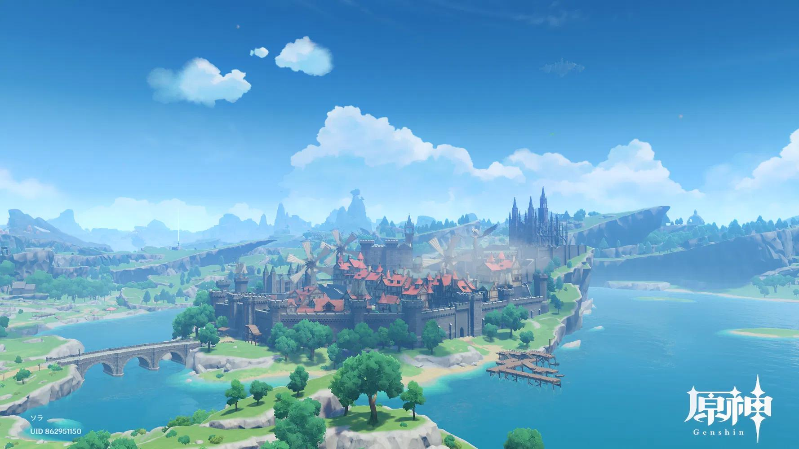
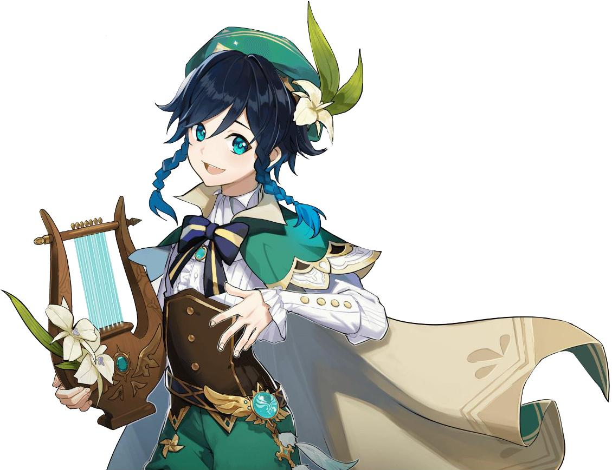
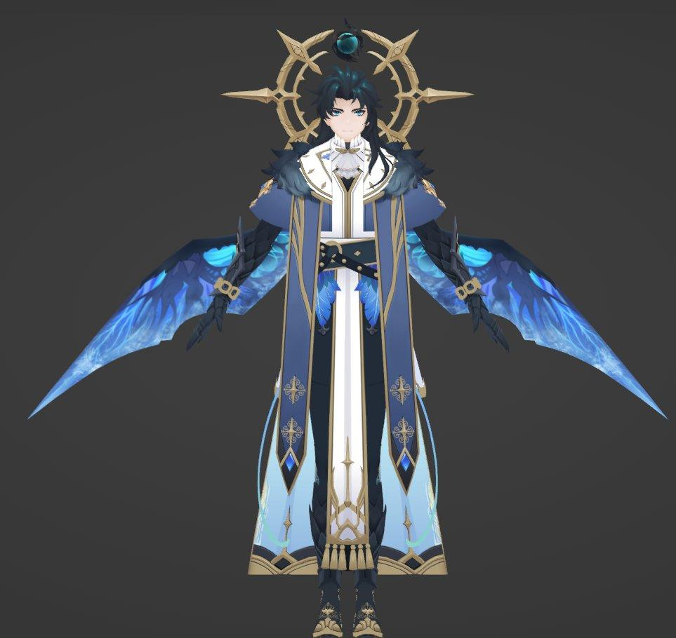
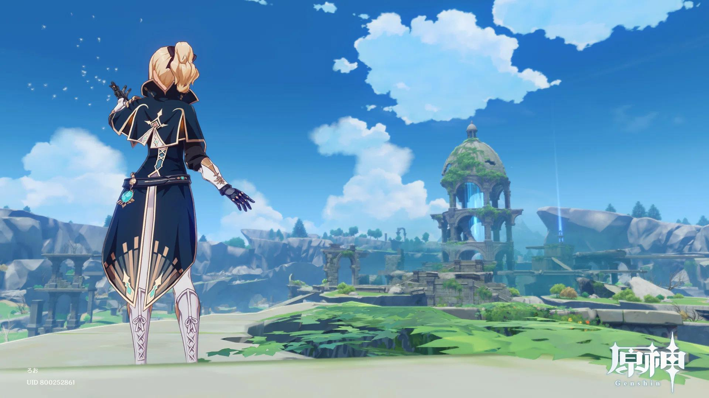
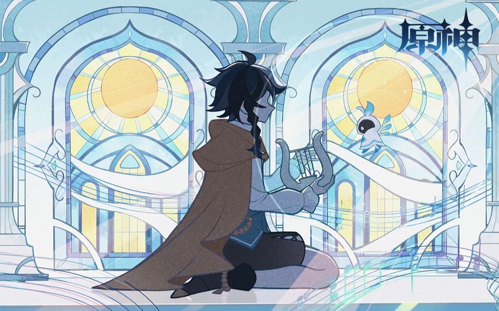
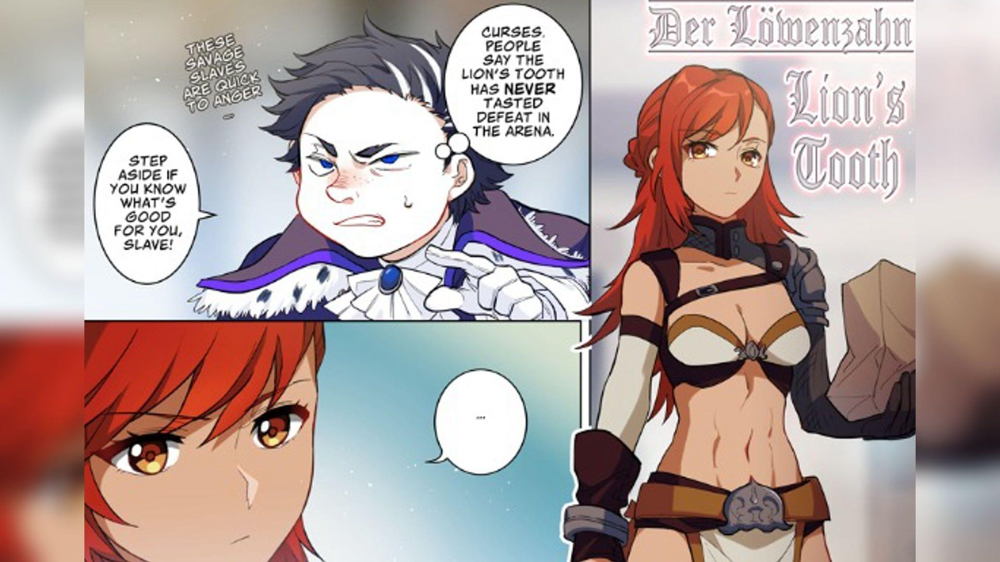
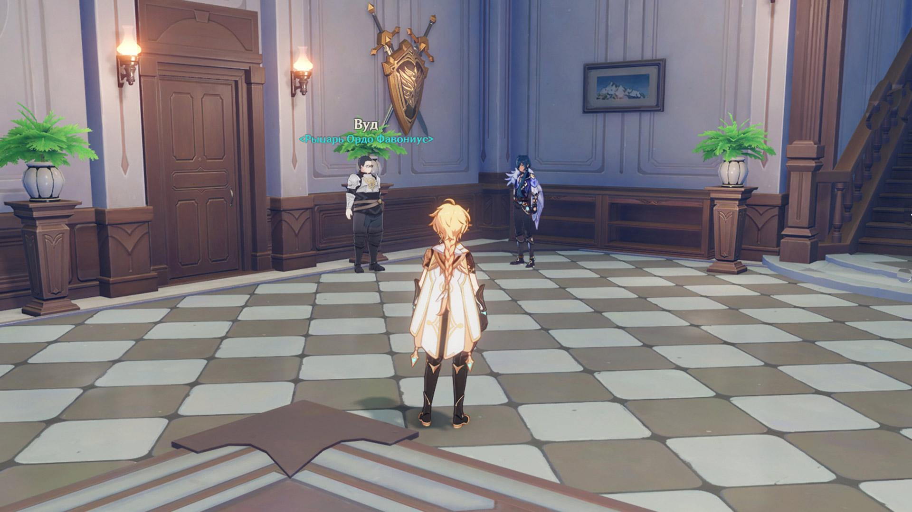
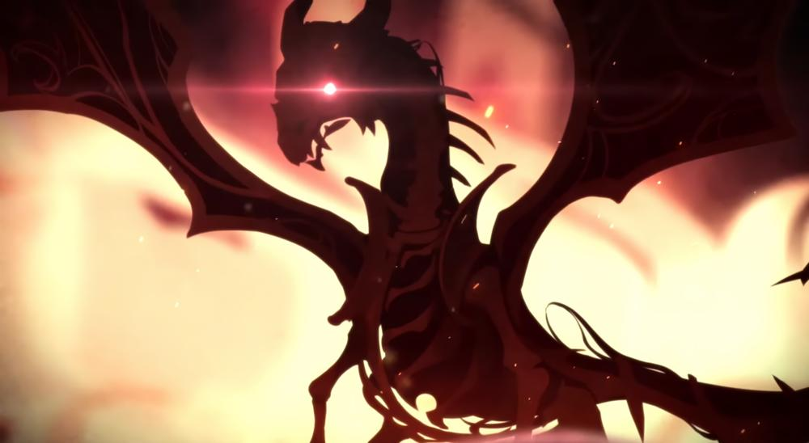
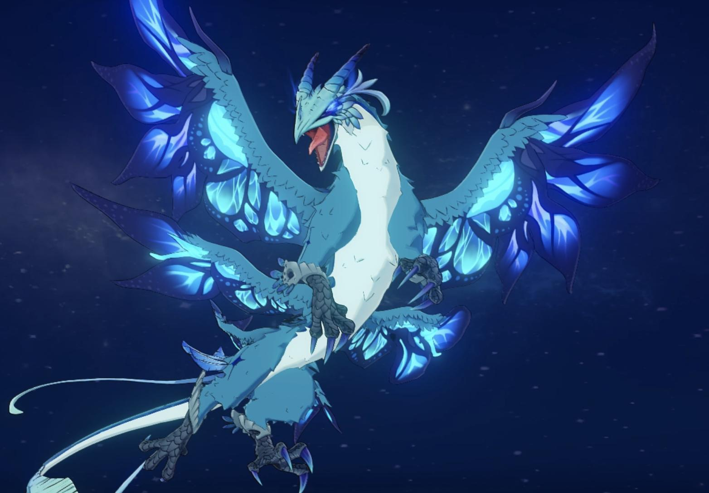

在提瓦特大陸東北方的群山與平原間，坐落著一座被蒲公英與清風吹拂的城邦——蒙德。在世人眼中，這裡是「風與自由的國度」，然而「自由」並非天生的恩賜，而是一部寫滿了三千年犧牲、歌聲與抗爭的壯烈史詩。
本簡報專為初入提瓦特或對其歷史感興趣的大眾設計。我們將依循歷史年表，從三千年前的風暴牢籠，逐步揭開自由之城的靈魂由來。

俯瞰被果酒湖環抱的自由之都·蒙德城
提瓦特大陸由七位掌握不同元素的「塵世執政」（神明）所庇護。然而，蒙德的守護神風神巴巴托斯卻與眾不同：
他不設宮殿、不向臣民發號施令，而是將城邦全權交由凡人自主管理。
他常以綠衣吟遊詩人「溫迪」的模樣漫步於街頭，手持琴弦，為蘋果與美酒歌唱。

風之神巴巴托斯的塵世化身——吟遊詩人「溫迪」
約三千年前，提瓦特處於魔神混戰的殘酷時代。彼時的蒙德並非綠意盎然，而是一片暴風雪肆虐的蠻荒冰原。
烈風之魔神「高塔孤王」迭卡拉庇安與冰原上的北風狼王安德留斯連年爭戰。為了抵禦外面的嚴寒，孤王以狂暴的烈風築起環形王都（即現在的「風龍廢墟」）。
武器素材官方文本記述：孤王高坐塔頂，自滿於繁華之夢，以為眾人躬身是出於愛戴；但他不知道，眾人是被呼嘯的烈風壓制得根本無法直立起身！

自居為全城之主與愛人者的「高塔孤王」迭卡拉庇安
面對孤王暴政，臣民苦不堪言。部屬古恩希爾德之父忍無可忍，率領全族冒死逃離高塔，卻在城外的冰天雪地中陷入滅族絕境。
族長年幼的女兒古恩希爾德帶領族人向風禱告，流民被風雪掩蓋的呼聲凝聚成為真摯的信仰。
信仰匯入千風中一縷極其微小的無形精靈（巴巴托斯前身），精靈因而獲得力量，為部族開闢了小小的風之避難所。
父親死後，古恩希爾德成為部族首領與首位女祭司。她與風精靈立下誓約，古恩希爾德家族自此確立了「永護蒙德」的崇高祖訓。

被萬丈風暴環壁死死封鎖的古蒙德王都遺址
在高塔暴風城內，無形的微風精靈結識了一位彈奏里拉琴的少年。
少年一輩子生活在風牆之內，生來不曾見過藍天、鷹隼與綠草。他一邊撥動豎琴，一邊在狂風呼嘯中吐露心聲：
精靈為了少年蒐集了鷹隼的翎羽，少年則以琴聲吹響了反抗暴風的號角。這份對外界天空最純粹、最本能的渴望，奠定了整個蒙德自由理念的最初萌芽。

渴望看見高天飛鳥翱翔的古蒙德無名少年琴師
少年撥動琴弦，古恩希爾德部族與反抗軍直面神明的震怒向高塔衝鋒。
素材記載，連狼王宣戰都未傷分毫的都城，在「自由」高歌的瞬間土崩瓦解，孤王繁華之夢粉碎隕落！
然而，少年卻不幸倒在了戰火的箭雨之中。神位空出後，微風精靈登上神座戴上神冠，成為風神巴巴托斯。
神明的樣貌是一份跨越千年的悼念與誓言
高塔推翻千年後，開國貴族中的勞倫斯家族腐化墮落，將蒙德城變為驅使奴隸的牢檻。慶典淪為虛偽遊戲，平民與外來流民備受凌虐。
來自南方的異鄉角鬥士少女溫妮莎與族人被捕入獄。肉身雖被拘禁，她卻從未放棄為族人、城邦與自由祈禱。
沉睡甦醒的風神巴巴托斯被熱忱祈禱喚來監牢，以友誼為約與少女結盟，相伴在荒原角鬥場迎戰肆虐的魔龍。

掙脫貴族奴隸枷鎖的傳奇角鬥士·溫妮莎
在風神歌聲激勵下，溫妮莎斬殺魔龍，微風吹垮了暴君高塔，勞倫斯統治被徹底推翻。
溫妮莎重建蒙德城，建立西風騎士團守護自由，成為「第一位騎士」。
蒙德人確立真理：神明不直接包辦一切，真正的自由必須由人民自己親手爭取與守護。

象徵守望城邦與民眾自由的西風騎士團
約五百年前，坎瑞亞災變爆發，漆黑魔獸潮席捲大陸。深邃古國的魔龍「杜林」大舉入侵蒙德，土地荒蕪，生靈塗炭。
此時西風騎士團人才凋零、獅牙騎士空缺。民眾的悲慟驚醒了風神，巴巴托斯召喚其最古老的眷屬——東風之龍特瓦林御風出征。
在劈散叢雲的激戰中，特瓦林展開六翼撕裂杜林鋼鱗，最終在龍脊雪山咬碎惡龍咽喉將其擊墜。然而，特瓦林卻不慎飲下了腐蝕入骨的漆黑毒血。

毒龍杜林隕落長眠的極寒龍脊雪山戰場
英雄因吞下毒血忍受著噬骨劇痛陷入數百年沉睡，蒙德後代卻在和平中忘卻了風龍的守護功績。
深淵邪物趁虛而入，痛苦與被遺忘的悲憤讓特瓦林迷失，被蒙德民眾誤認為襲擊城邦的惡龍。
風神溫迪並未消滅巨龍，而是引導旅行者以勇氣清除毒血，用琴聲撫慰老友，讓特瓦林重獲「自由之名」。
這場危機展現了現代蒙德對受難者的寬恕與包容：自由並非無情的防衛，而是願意傾聽受傷者的心聲並予以救贖。

被毒血折磨後重獲自由與清醒的東風之龍·特瓦林
破繭的渴望
核心符號：高塔孤王 / 無名少年 / 風精靈
理念內涵：打破暴風壁壘，對看見藍天與飛鳥的純真嚮往。神明確立「不親政」，把自由留給凡人。
抗爭與自立
核心符號：勞倫斯家族 / 溫妮莎 / 騎士團
理念內涵：拒絕依賴神明的恩賜，強調人民自我覺醒。確立「在妳的歌裡妳才是主角」，並建立制度守護。
守護與寬容救贖
核心符號：杜林之戰 / 特瓦林 / 旅行者
理念內涵：承擔守護的沉重代價。面對被毒害的同伴不盲目誅殺，而是以琴聲安撫與淨化，實現真正的自由包容。
蒙德之所以被稱為「自由之都」，並不是因為這裡從不曾降臨黑暗或暴政，
而是每當狂風化為牢籠、每當枷鎖鎖住大地，
總有人願意如少年的琴弦、如溫妮莎的利劍、如特瓦林的雙翼一般，
挺身吹起反抗之風。
本簡報全內容 100% 基於《原神》LLM Wiki 知識庫沉澱 | 感謝聆聽